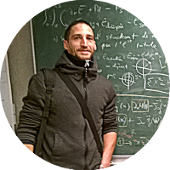

About me
My name is Antoine Falaize. I am a father, a research-engineer and a sound-maker (order matters!).
Research
I currently hold a scientific computing researcher engineer position at the french Laboratory of Engineering Sciences for Environment (LaSIE, UMR CNRS 7356, University of la Rochelle, France). My research focuses on the development of formal and numerical methods for the simulation and the control of multi-physical and multi-scale systems. I cover all the lifecycle of a physical model:
automated generation of the state equations in a guaranteed passive formulation,
passivity preserving numerical methods to solve the state equations and automated generation of the C++ code,
automated derivation of open and closed loop passive controllers,
automated derivation of guaranteed passive reduced order models.
Background
I received the second-year university level in Vibration, Acoustic and Signal Pocessing from the Laboratory for Acoustics at University of Maine (LAUM, UMR CNRS 6613, Le Mans, France) in 2006, before an experience as a music producer and sound engineer. Then I received the M.S. degree in Acoustic and Signal Processing Applied to Music in 2012 from the University Pierre et Marie Curie (UPMC, Paris Sorbone, France).
My PhD thesis has been supervised by Thomas Hélie between 2012 and 2016 in the Sound, Signals ans Systems (S3) team at IRCAM laboratory (STMS, UMR CNRS 9912, Paris, France). The subject is Modeling, simulation, code generation and correction of multi-physical audio systems, with an approach by network of components and a port-hamiltonian formulation.